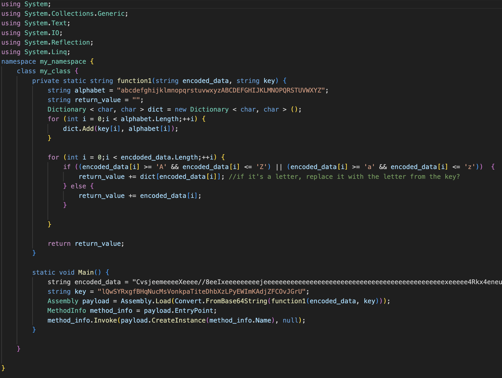
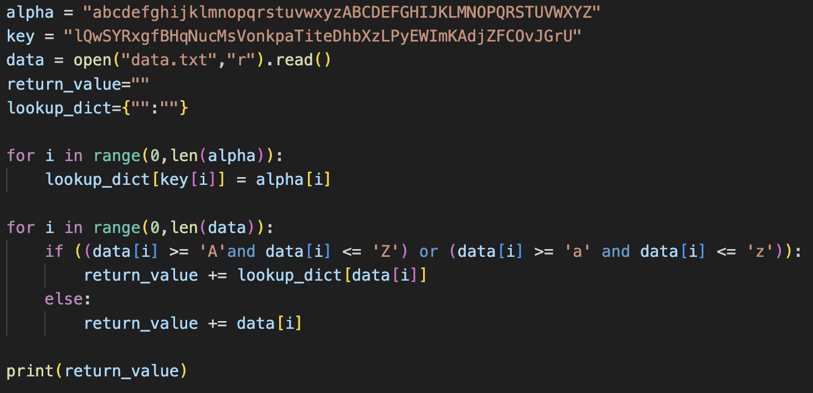
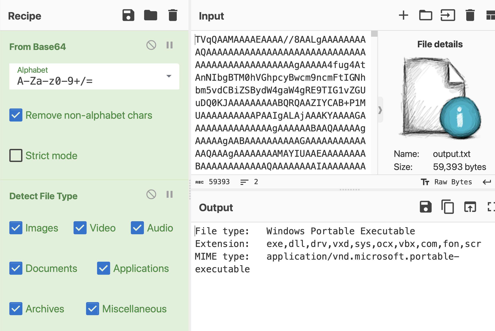
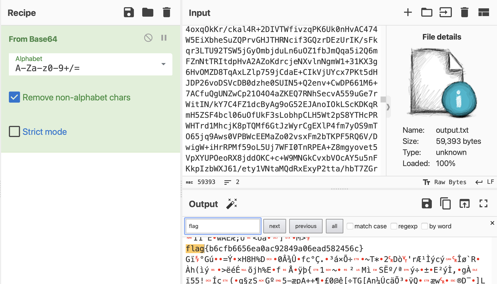

Huntress CTF Babel Writeup
What a load of nonsense!
17/10/2023
This was one of the challenges that made up the 2023 Huntress CTF. I was pleased with the little python script I wrote to help me solve it, so thought I’d do a wee write up to go alongside it. Hopefully if you struggled with this challenge, this will provide a little insight.
Inital Analysis
Well it looks a mess. I spent some time rename variables to try and understand a bit of what was going on, and ended up with this.

It looks like the function (function1) takes in two arguments, an encoded string and a key to decode it. It aligns to key with the alphabet and then searches through the encoded string looking for any letters. If it finds a letter, it looks it up in the dictionary and replaces it with the value of the index. In this case, ‘l’ is replaced with ‘a’, ‘Q’ is replaced with ‘b’,’w’ is replaced with ‘c’, and so on and so forth. The function finally spits out this decoded string. The rest of the program takes that string, base64 decodes it and then executes it. First things first, let’s decode that string.
Decoding the Payload
We could do this by hand if we had all the time in the world. Or we could figure out what language this code is in (C#?) and compile it, modifying it first to spit out the decoded string rather than execute it. But instead I wrote a python script to decode the payload.

The script first makes up a dictionary to translate the characters, then iterates through the data (which is stored in a file called ‘data.txt’) and decodes it. It finally spits out some rather horrible looking characters, which can be decoded as base64 to get a windows executable.

Flag!
Taking off the “detect file type” filter and searching for “flag” gets us exactly what we were looking for.

Conclusion
This was a fun challenge. I think the reason I quite enjoyed it is because a year ago this type of task would have been much more overwhelming for me. I likely would have gotten fed up and dropped it pretty quick. But today, I methodically went through the code by hand and wrote my own script to decode it, using the information I had gathered in my initial analysis. I'm pleased with this progress in technical skill and chatacter, so I thought I'd make a blog post.